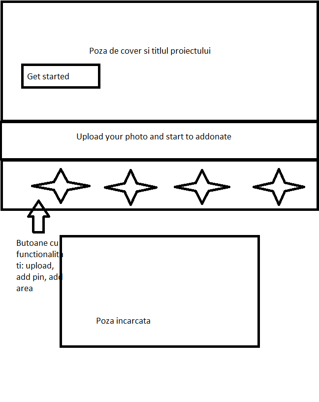

Proiect DAWNC (IWAI)
Studenti-
Facultate
- computerscience
Cerinta proiect
Considerând conţinuturile grafice prezente într-o pagină Web, să se realizeze un instrument Web permiţând definirea de zone de interes (minimal, forme geometrice 2D elementare) ce pot fi suprapuse peste o imagine pentru a specifica, în funcţie de un eveniment vizând interacţiunea cu utilizatorul (e.g., click, hover, tap etc.) realizarea unei acţiuni: acces la o resursă Web pe baza URL-ului asociat, substituirea imaginii vizate cu alta, plasarea de comentarii pentru fiecare zonă selectată, modificarea unor proprietăţi vizuale etc. Câteva exemple: vizitarea unui sit Web atunci când Tuxy plasează cursorul peste o zonă suprapusă tricoului persoanei figurate într-o fotografie (zonă interactivă specificată în prealabil) sau înlocuirea imaginii cu alta mai detaliate incluzând detalii privind uzura pieselor în cazul în care utilizatorul execută click ori tap asupra pendulei vândute pe un sit Web.
Tehnologii utilizate
In aceasta aplicatie vom folosi JavaScript, HTML5,CSS,jquery recurgand si la framework-ul bootstrap. Motivul pentru care am ales aceste tehnologii si limbaje este facilitatea si accesibilitatea pe care le ofera acestea. De exemplu, bootstrap ofera suport pentru toate tipurile de dispozitive mobile.
Design-ul aplicatiei si interactiunea cu utilizatorul
Am ales un design simplu, specific framework-ului bootstrap. In partea de sus vom avea o poza de cover si titlul proiectului, urmate de o propozitie care
sintetizeaza partea esentiala a proiectului.("Upload your photo and start to addontate."). De asemenea, pentru ca utilizatorul sa poata sa interactioneze cu
aplicatia, vor exista patru butoane prin intermediul carora utilizatorul va avea diverse optiuni de adnotare( upload photo, add pin, add area, replace photo)
. Sub aceste butoane se va gasi poza incarcata de catre utilizator.
